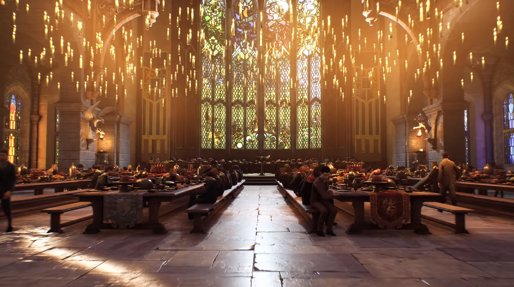
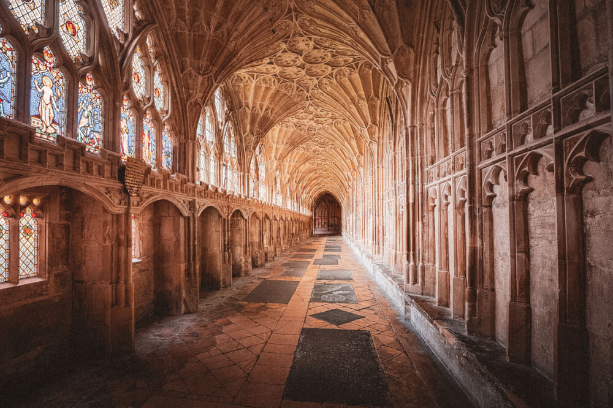

Hogwarts Information
Hogwarts School of Witchcraft and Wizardry

Hogwarts School of Witchcraft and Wizardry, otherwise known as Hogwarts, is located in the Scottish Highlands in Great Britian. Here they accept students from Great Britian and Ireland. The school is also funded by the Ministry of Magic.
The school is in an unknown location to help protect it from Muggles who might stumble across it. There are several protection spells to help with this and if a Muggle does happen upon it the castle will just appear to be an abandened castle.
Hogwarts was established in the 10th century and is considered one of the finest magical institutions in the Wizarding World. Though it is followed closely by Beauxbatons Academy of Magic in France, the Durmstrang Academy in northern Europe, and Livermorny School of Witchcraft and Wizardry in the United States.
To become enrolled by the age of 11 you should get an owl post with an acceptance letter. Most students are enrolled at birth and get their letters when they turn of age to go to the school. If you are a Muggle-born that has developed magical powers than a staff member from the school will come to your home and talk to your parents about the circumstances and what Hogwarts is and that there is magic.
The actual grounds of Hogwarts is pretty magical itself. The grounds consist of sloping lawns, flowerbeds, vegetable patches, as well as a loch called the Black Lake, a dense forest which is called the Forbidden Forest, several greenhouses, and other outbuildings, and a full-size Quidditch Pitch. In the highest tower of the school is where you will find the owlery, where the owls from the students and staff get to be until they are needed. The castle itself sits on top of large rocks above the Black Lake. The other three highest towers are where you will find Astronomy, Ravenclaw and Griffindor towers. The castle had 142 stairs that were known to change position. Not only did the stairs change up but the rooms were known to change also. Even Albus Dumbledore, who was the Head Master, has said he never could explore the whole thing and didn't know all of the castles secrets.
Along with the charms and spells to keep Muggles from finding out what the castle is used for there are also spells to help keep the school safe. Witches and Wizards cannot Apparate or Disapparate on the grounds unless the charms are disspelled. No electricity or electronic devices are found on the grounds. Also because of the magic to deter Muggles, their devices go haywire when around Hogwarts.
Hogwarts itself was founded around 990 A.D. by four of the greatest Wizards and Witches of the age: Godric Gryffindor, Helga Hufflepuff, Rowena Ravenclaw, and Salazar Slytherin. Salazar Slytherin soon after helping find the school had a falling out. He believed that magic should only be taught to pure-bloods. Muggle-borns and Half-borns were unworthy of magic. The other founders disagreed, especially Godric Gryffindor. So Slytherin left the school, but not before he established the Chamber of Secrets. Here is put a murderous basilisk who would be unleashed when the heir of Slytherin arrived at the school and unleashed the snake to purge the school of Muggle-born students. The Chamber was almost founded when they were installing plumbing to the school, but other Slytherins managed to keep it hidden and eventually a grand sink in a girls bathroom was placed around the opening and it was hidden there until it was found sometime later by Tom Riddle.